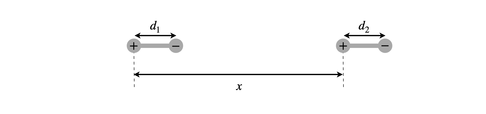

Questions 35 - 44¶
Q35 Lennard-Jones potential¶
The Lennard-Jones 6-12 potential, which describes the intermolecular energy between a pair of molecules, has a minimum at \(\displaystyle r_e = 2^{1/6}\sigma\). The potential is
where \(\epsilon\) is the depth of the energy well and \(\sigma\) the diameter of a molecule.
(a) Show that the minimum energy is \(-\epsilon\).
(b) Expand the potential about the minimum energy at intermolecular separation \(r_e\) using a Taylor series.
(c) Calculate the approximate Hooke’s law force constant, \(k\), around the minimum energy. This is the slope of the derivative of the potential with extension \(x\), i.e. \(\displaystyle dU/dx = -kx\). Calculate the approximate classical vibrational frequency in the bottom of the potential using parameters for Xe; \(\epsilon = 20.0\) meV and \(\sigma = 398\) pm.
(d) To check your calculation, plot the equation and the expansion to the second power of \((r - r_e)\).
Strategy: (b) Use a Taylor expansion about the minimum separation \(r_e\), and then ignore terms in higher powers of \((r - r_e)\) as the change from the equilibrium position is small. Because you have to take the derivative of the potential to find the force constant, expand the potential at least to quadratic terms.
Q36 Dipole - ion interaction¶
A dipole \(q^+ - q^-\) will interact with an ion in solution because the electric field of the ion will extend through the solution and so cause a force to exist between them. The electric field strength \(E\) around a charge is the force / unit charge, or \(E = f/q\). Because there is a force between the charges, energy is needed to place the dipole and ion at any given separation. Your textbook will state that this force varies as the inverse cube of the separation from the dipole when the separation is larger than the size of the dipole itself. However, two isolated point charges, \(q_1\, q_2\), will interact with a force given by the inverse square of their separation,
where \(\epsilon_0\) is the permittivity of free space and \(\epsilon\) is the relative permittivity (dielectric constant) of the intervening medium, such as the solvent. Force written in this way has SI units of J m\(^{-1}\). The interaction energy in joules between two point charges \(q_1,\, q_2\) at separation \(r\) is
(a) By calculating the electric field at the ion situated along the x-axis with charge +\(z\), show that the ion-dipole interaction varies with separation as \(1/x^3\); the next figure illustrates the geometry.
(b) What is the interaction energy at separation \(x\)? Determine that it has the correct units.
The figure below shows the geometry of the ion-dipole interaction. A more complete, and more complicated calculation, would allow the ion to be at any angle to the dipole and the results averaged, but the result is qualitatively the same. The dipole length is \(2d\).

Figure 5. Geometry of the ion-dipole interaction. A more complete, and more complicated calculation, would allow the ion to be at any angle to the dipole and the results averaged, but the result is qualitatively the same. The dipole length is \(2d\).
Strategy: Calculate the electric field using charges +\(q\) and \(-q\) then calculate the energy. In electrostatic calculations the field and energy is always calculated as the sum of the individual contributions between each pair of charges. As the separation is large compared to the size of the ion or dipole expand the field in terms of the fractional separation. Using the diagram, the dipole has charges +\(q\) and \(-q\) and the ion +\(z\). Note that \(E\) is used to represent the electric field.
Q37 Dipole-dipole energy¶
The energy of two interacting dipoles, with the geometry shown below, is

Figure 6. Definition of dipole’s geometry.
(a) Explain how this equation is derived.
(b) Show that if \(x \gg d_1\) and \(d_2\), the energy varies as \(\mu_1\mu_2/x^3\) where \(\mu_1, \, \mu_2\) are the dipole moments equal to \(qd_1\) and \(qd_2\) respectively.
(c) Calculate the interaction energy if two dipoles each of \(5\) D are separated by \(2\) nm, as shown in the figure. Compare this to thermal energy at room temperature.
Strategy: Because the interaction is electrostatic (or Coulomb) in nature, the energy is always calculated by adding together the interaction between pairs of charges; one charge each end of the dipole on one molecule with each of the charges on the other. The energy is inversely proportional to the separation of each pair of charges so there are four terms to consider.
Q38 Doppler effect¶
The pitch of an ambulance’s siren sounds higher as it speeds towards us and lower as it recedes. This is caused by the Doppler effect. Because the source is moving, the separation between the sound waves becomes smaller as the source approaches and longer as it recedes.
In approaching you, the sound frequency appears to be up-shifted from \(f_0\) to \(\displaystyle f = f_0\left(\frac{s+v_0}{s-v} \right)\) where \(s\) is the speed of sound in air, approximately \(331\, \mathrm{m\,s^{-1}}\) or \(740\) m.p.h., \(f_0\) the true frequency of the siren is \(440\) Hz and \(v\) the velocity of the ambulance is \(60\) m.p.h. and \(v_0\) is your, the observers, speed.
When the vehicle moves away from you the perceived frequency is lower as now \(\displaystyle f = f_0\left(\frac{s+v_0}{s+v} \right)\) ; notice the sign change.
(a) Sketch how the sound frequency perceived by a stationary observer positioned, as shown in the figure, would change as the vehicle passes.
Figure 7. In the figure the stationary vehicle produces sound wave-fronts that are equally spaced from one another in all directions if measured at equal time intervals. The moving vehicle causes the sound waves to appear to close up in the direction of travel, and to move apart in the opposite direction. If you are at the side of the road, the sound is that component of the forward motion in your direction. If you are in the vehicle, the pitch of the sound appears to be the same whether you are moving or stationary because the sound waves are always generated at the same frequency and because they are moving much faster than the vehicle.
(b) Show that the perceived frequency shift \((f - f_0)/f\) is proportional to \(v\), the speed of the ambulance. Assume that your speed \(v_0\) is small compared to the speed of sound.
Strategy: (a) The frequency heard is higher than normal when the ambulance is approaching and coming directly towards us, but is at exactly frequency \(f_0\) when it is right in front of us, and falls as it departs. (b) If we were to assume that both \(t_0\) and \(t\) are small compared to \(s\), the speed of sound in air, and simply ignore them, then \(f = f_0\) and the frequency would not change. Experience tells us that the perceived frequency does change, so this assumption cannot be correct because it is too crude. Instead, rearrange the frequency equation into two parts, and ratio the speeds to produce terms such as \(\displaystyle (1 - v/s)^{-1}\) and then expand into a series.
Q39 H atom Lyman-\(\alpha\) line¶
(a) The relativistic red shift observed in the H atom Lyman-\(\alpha\) line from a star in a distant galaxy is \(\displaystyle \frac{\Delta \lambda}{\lambda}= \sqrt{\frac{1+v/c}{1-v/c}}-1\) where \(c\) is the speed of light and \(v\) the relative velocity of the star.
(b Show that for a small relative star velocity \(\displaystyle \frac{\Delta \lambda}{\lambda}=\frac{v}{c}\).
(c) If the laboratory reference transition is \(\Delta \lambda = 0.1\) nm wide, what is the smallest speed a star must be receding by to separate it from the reference line, assuming that a separation of \(2\Delta \lambda\) is needed?
Q40 Coupled molecular energy levels¶
Two molecular energy levels of energy \(E_1\) and \(E_2\) and separation \(\Delta E\) interact with a ‘coupling energy’ \(V\). Perturbation theory applied to quantum mechanics allows us to calculate how these levels are shifted in energy as a result of this interaction. One level rises, the other falls and their new energies are,
and the total energy remains the same, as shown in the figure. The initial two levels interact to form two new levels. Overall the energy is reduced but if two or three electrons fill the energy levels. If zero or four fill both levels then there is no energy saving.
Figure 8. Initial levels (left) interact with coupling \(V\) to produce two new levels (right).
(a) Calculate the total energy before and after the interaction and show that they are the same.
(b) Calculate the two energies when \(V \ll \Delta E\), both being positive, and when \(V \gg \Delta E\).
(c) Plot the correct energies if \(E_1 = 2, E_2 = 3\) and \(V\) varies from \(0 \to 1\), and compare them with the approximations from (b).
Strategy: In (b) when \(V \ll \Delta E\) expand the square root in \(E\pm\). Do this by rearranging to get a term in \(\displaystyle \sqrt{1+4V^2/\Delta E^2}\).
Q41 Madelung constant¶
Crystals of simple salts consist of ordered lattices of anions and cations where the forces are predominantly due to the Coulomb electrostatic interaction. As there are many ions, the total interaction acting upon any one of them is due to the effect of all the others. The energy between any two ions 1 and 2 separated by a distance \(d\) is \(\displaystyle U_{12}=\frac{q_1q_2}{(4\pi \epsilon_0)d}\) where the charge on an ion is \(q=eZ\),and \(e\) is the electronic charge \(1.6022 \cdot 10^{-19}\) C. The charge number \(Z\) can be positive or negative.
(a) Find the total energy of a positively charged ion in a linear chain of alternating positive and negatively charged ions with charges \(Z\) and \(-Z\). Find the Madelung constant \(M\), which is the numerical factor that contributes to the energy and is due solely to the positions and charges of the ions. The total energy is \(\displaystyle U_{12}=M\frac{q_1q_2}{(4\pi \epsilon_0)d}\).
Figure 9a. Ions placed on a line.
(b) Repeat the calculation on a square grid of alternating charges as shown below where the diagonal shown has a length of \(d\sqrt{13}\). Now the summation has to be evaluated numerically. You will need very many terms (thousands) to make the addition converge. The result is \(-1.612\) but a reasonable number of terms produce \(-1.6\).
Figure 9b. Some of the ions whose charges alternate on a square lattice of atoms with grid spacing \(d\). The diagonal shown has length \(d\sqrt{13}\).
Strategy: The total energy of several charged species, of any sort, is always the sum of the individual pair-wise interactions, + to +, - to - and + to - as appropriate. For example, the interaction between any two ions 1 and 2 is \(\displaystyle U_{12}=\frac{q_1q_2}{(4\pi \epsilon_0)}\frac{1}{d_1 - d_2}\) where \(d_1 - d_2\) is their separation, and in a line or on grid, the nearest separation is always \(d\). Consider only the interaction of any two species at a time, and if there are many charges these add up as pair-wise contributions ignoring any intervening or other nearby charges.
Q42 Lennard-Jones potential¶
The Lennard-Jones potential between a pair of atoms with separation \(r\) is
The potential acts mainly at short range and \(\epsilon\) is the strength of the intermolecular interaction and \(\sigma\) scales the interaction and is approximately \(0.3\) nm for solids of the noble gases. The interaction energy \(\epsilon\) is \(0.0031\) eV for Ne and \(0.020\) eV for Xe. When there are many atoms in a solid the cohesive energy \(U_c\) is calculated as the sum of the pair-wise interactions between atoms \(i\) and \(j\):
In a cubic crystal the separation of any pair of atoms is represented in terms of multiples of the near neighbour separation, \(R\), where \(r_{ij} = \alpha_{ij}R\). The number \(\alpha\), which need not be an integer, clearly depends on the crystal geometry. The summation becomes
Calculate the lattice sums \(\displaystyle A_6=\sum\limits_{j \ne i} \alpha_{ij}^{-6}\) and \(\displaystyle A_{12} = \sum\limits_{j \ne i} \alpha_{ij}^{-12}\) for a simple cubic crystal lattice using the diagram below which shows a simple cubic structure with near neighbours (\(A\)), and some of the next near neighbours (\(B\)) and (\(C\)). Atoms in the other adjacent unit cells, which are not shown, will also contribute to the summation.
Calculate the value for a unit cell then use Python to calculate the sum over as many cells as necessary to achieve two decimal places of accuracy.
Figure 10. A simple cubic structure with near neighbours (A), and some of the next near neighbours (B ) and (C ). Atoms in the other adjacent unit cells, which are not shown, will also contribute to the summation.
Q43 Dipole selection rules¶
The electric dipole selection rules for vibrational transitions in diatomic molecules are described by expanding the dipole moment in a Taylor series about the equilibrium bond length Re, and then evaluating the transition dipole moment, which is the integral
This integral must not be zero if a transition is allowed. The transition dipole is \(\mu\), and \(\psi_i\) and \(\psi_f\) are the initial and final wavefunctions with vibrational quantum numbers \(f\) and \(i\) respectively. The displacement of the nuclei from equilibrium, which is the bond extension, is \(R - R_e = x\).
(a) Show that, in the harmonic oscillator, the selection rule for a transition is such that only adjacent energy levels are linked with a photon. If the initial vibrational level has quantum number \(i\) the final one is \(f = i \pm 1\), provided \(i \ne 0\), i.e. \(\Delta v = f - i = \pm 1\).
(b) Next show that in the anharmonic oscillator the selection rule is additionally that the level \(i\) can undergo an optical transition to \(i \pm 2\).
Notes: In a harmonic oscillator, the dipole varies linearly with bond extension, but in the anharmonic oscillator, the dipole \(\mu\) varies in a non-linear fashion with extension. The vibrational wavefunctions are orthonormal, therefore \(\displaystyle \int \psi_f^*\psi_i dx =\delta_{if}\) where \(\delta_{if}\) is the Kronecker delta function which is \(1\) if \(i = f\), otherwise it is zero. The wavefunctions have alternatively odd - even symmetry character, which means that
and otherwise the integrals are zero. These results can be confirmed by direct integration using the equations for the Hermite polynomials.
Strategy: It is hard to know where to start as we are not told much about \(\mu\). All we know is that it is a dipole, so it is, by definition charge times distance, and in this case the distance is the bond extension \(x\). These facts mean that \(\mu\) can be expanded as a function of \(x\) about \(x = 0\), which corresponds to the equilibrium bond extension, as suggested in the question. The expansion is rather like generating an equation out of nothing or, figuratively, pulling a rabbit out of a hat!
The importance of integration ‘odd’ and ‘even’ functions is clear; if the function is odd the integral over all space is always zero, if even the integral generally is not zero. In the more general sense, group theory should be used to determine if the integral belongs to the totally symmetric representation of the point group of the molecule, which, if it does, the integral is finite. See Chapter 7 (Matrices) for a fuller discussion.
Q44 Hellmann - Feynman theorem¶
The Hellmann - Feynman theorem states that for a property \(q\) the energy of a molecule \(U\) and its Hamiltonian \(H\) are related as \(\displaystyle \frac{dU}{dq}=\left<\frac{dH}{dq}\right>\). The angle brackets indicate an average value is measured.
Suppose the property \(q\) is an external electric field \(E\) then \(q \equiv E\), and in the presence of this field, the Hamiltonian is \(\displaystyle H = -\bar\mu\cdot \bar E\) where \(\bar\mu\), and \( \bar E\) are vector quantities. To simplify matters suppose that the field only exists along the z-axis then \(H = -\mu_zE\).
(a) Calculate \(dU/dE\).
(b) Use a Taylor series to expand the molecular energy \(U\) in terms of the electric field \(E\) about the energy \(U_0\) in a field, which is zero.
(c) If \(\displaystyle \langle \mu_z \rangle = \mu_{z0} + \alpha E + \beta E^2 /2 + \cdots\) where \(\alpha\) is the polarizability and \(\beta\) the hyper - polarizability, find expressions for \(\alpha\) and \(\beta\) as derivatives of the energy with field strength.